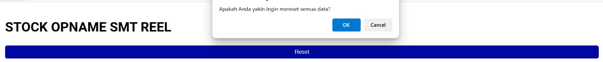
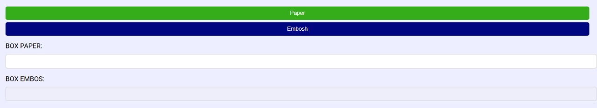

Panduan Digital Aplikasi Kalkulator Penghitung Jumlah Komponen pada Roll
Pendahuluan.
Pengenalan
Selamat datang di panduan digital aplikasi kalkulator penghitung jumlah komponen pada roll! Aplikasi ini hadir untuk mempermudah perhitungan jumlah komponen dalam satu roll berdasarkan parameter seperti panjang roll, ukuran komponen, dan jarak antar komponen. Dengan aplikasi ini, proses perhitungan menjadi lebih cepat, akurat, dan efisien.
Tujuan Penggunaan
Dibuat khusus untuk menghemat waktu dan mengurangi kesalahan dalam perhitungan manual, aplikasi ini membantu pengguna dalam menentukan jumlah komponen dengan lebih presisi.
Sasaran Pengguna
- Operator produksi – Memastikan jumlah komponen dalam roll sesuai dengan kebutuhan produksi.
- Teknisi – Membantu dalam pengaturan dan pemantauan produksi secara lebih efisien.
- Insinyur manufaktur – Menganalisis dan meningkatkan efisiensi proses produksi.
Tampilan.
Frequently Asked Questions (FAQ)
1. Nama komponen (Paper/Embos) tidak muncul pada kotak komponen.
Jawaban: Coba gunakan web browser lain selain Mozilla Firefox, Chrome, Edge, atau browser sejenis.
2. Kenapa hasil perhitungan pada komponen A dan B pada kolom ukuran diameter sama, padahal komponennya berbeda?
Jawaban: Jika Anda mengganti komponen tetapi hasil perhitungannya tidak berubah, coba hapus nilai ukuran yang dimasukkan sebelumnya, lalu isi kembali dengan ukuran yang sesuai.
3. Apa perbedaan antara "Export Riwayat" dan "Export Total"?
Jawaban:
- Export Riwayat: Mengekspor semua data yang telah dimasukkan dalam perhitungan dari awal hingga akhir.
- Export Total: Mengekspor data dalam kondisi jumlah total, di mana hasilnya sudah dijumlahkan untuk setiap komponen.
4. Bagaimana cara mereset semua data secara langsung?
Jawaban: Anda bisa menekan tombol "Reset" yang terdapat di bagian atas aplikasi.
5. Kenapa perhitungan pada SMT 1-3 berbeda dengan Rack?
Jawaban: Perhitungan pada SMT 1-3 berbeda dengan Rack karena aplikasi ini dirancang untuk memudahkan pengguna dalam menghitung setiap SMT tanpa harus melepas komponen dari mesin, sedangkan perhitungan pada Rack memiliki metode yang berbeda.
6. Kenapa kotak komponen tidak dapat ditekan dan memilih komponen?
Jawaban: Anda bisa menekan button "Paper" atau "Embosh" seperti gambar di bawah ini:
Jika ada pertanyaan lain, silakan hubungi kontak di bawah ini:
 WhatsApp
WhatsApp